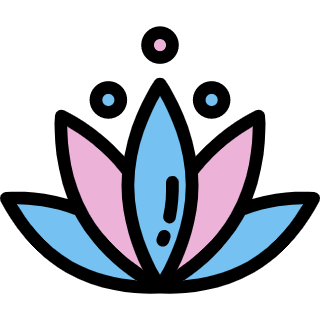
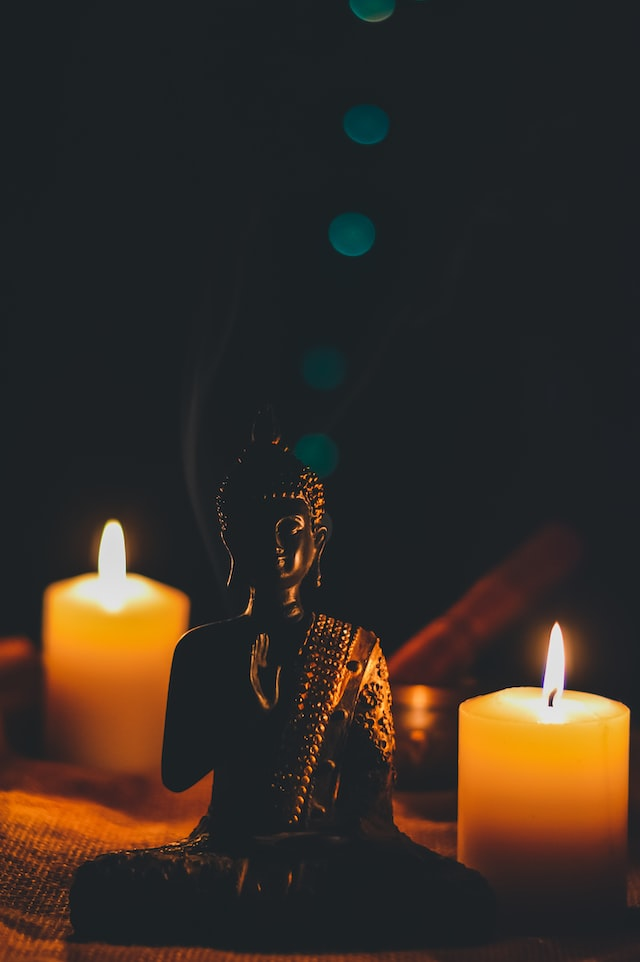
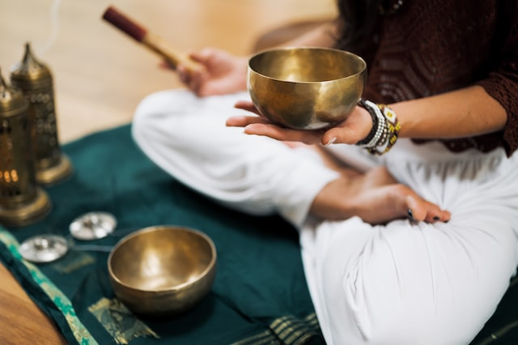

Mindfulness

O termo significa atenção plena. Nesse tipo de meditação, você fica atento ao que está fazendo naquele momento. Além da atenção, no mindfulness você treina a "curiosidade" ou "mente de principiante". "Seria uma atitude na qual estamos abertos à situação sem julgá-la", afirma Marcelo Demarzo, médico e especialista em mindfulness. Existem as técnicas atencionais, em que você usa uma âncora --como a respiração ou o corpo parado ou em movimento-- para focar sua atenção. Há também técnicas construtivistas, que têm a intenção de gerar um determinado estado na pessoa. E há também práticas analíticas, que levariam a certas reflexões ou autorreflexões.

Meditação Transcendental
Nela, você ensina a sua mente a mergulhar no campo transcendental. "Você não tem o futuro, nem o passado, nem o agora. É a experiência da consciência conhecendo a si mesma", diz Eliana Humenco, instrutora da técnica. Segundo ela, existem etapas para esse aprendizado. "É uma técnica de experiência prática, a pessoa aprende a atingir este campo e a alcançar de forma sistemática o estágio consciência pura." Eliana conta que é um estágio profundo como o sono, só que com a mente alerta. Neste tipo de meditação, não há técnicas focais --como, por exemplo, focar na respiração-- nem tempo presente. "Você não precisa se concentrar nem controlar pensamentos", acrescenta Eliana. O intuito é mergulhar na consciência.

Meditação Guiada
A meditação guiada para iniciantes nas práticas meditativas é uma opção para quem tem dificuldade de manter o foco por mais tempo, ou não sabe lidar com diversos pensamentos que surgem quando tentam meditar sozinhos.
A técnica consiste no processo de um ou mais participantes que meditam em resposta à orientação fornecida por um professor ou praticante treinado. As instruções para o exercício podem ser verbais, ou através de imagens e músicas.
A meditação, por si só, consiste na técnica de auto observação, seja da própria respiração, de pensamentos ou sentimentos que surgem após determinado acontecimento. A meditação guiada atua como uma ferramenta de apoio para uma percepção maior do corpo e mente.

.png)
.png)
.png)
.png)